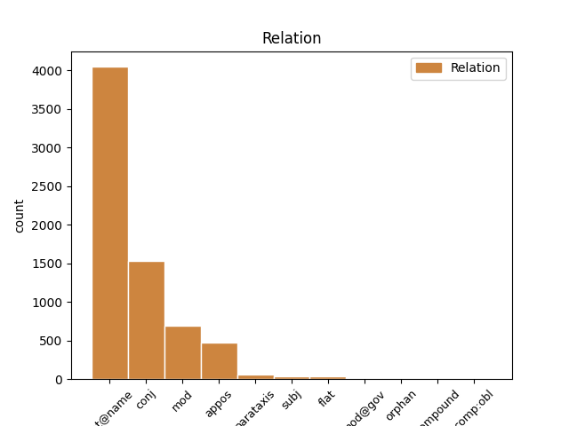
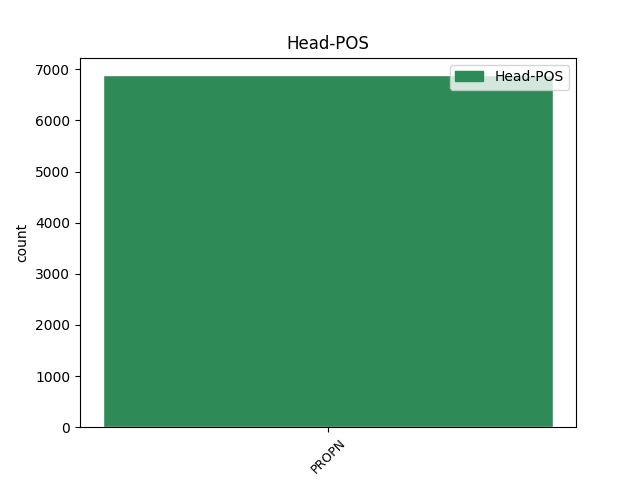
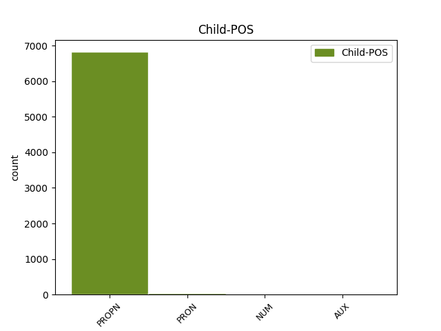

Distribution of features within this leaf



Agreement Rules sorted by frequency.
- When the dependent token is the flat multiword expression(flat@name) of the head token, and the head token is PROPN and the dependent token is PROPN.
1 На _ _ _ _ 0 _ _ _
2 тех _ _ _ _ 0 _ _ _
3 же _ _ _ _ 0 _ _ _
4 состязаниях _ _ _ _ 0 _ _ _
5 он _ _ _ _ 0 _ _ _
6 опередил _ _ _ _ 0 _ _ _
7 в _ _ _ _ 0 _ _ _
8 беге _ _ _ _ 0 _ _ _
9 всех _ _ _ _ 0 _ _ _
10 , _ _ _ _ 0 _ _ _
11 кроме _ _ _ _ 0 _ _ _
12 длинноногого _ _ _ _ 0 _ _ _
13 учителя _ _ _ _ 0 _ _ _
14 математики _ _ _ _ 0 _ _ _
15 Михаила Михаил PROPN _ Animacy=Anim|Case=Gen|Gender=Masc|Number=Sing 0 _ _ _
16 Александровича Александрович PROPN _ Animacy=Anim|Case=Gen|Gender=Masc|Number=Sing 15 flat@name _ SpaceAfter=No
17 . _ _ _ _ 0 _ _ _
1 Волховский _ _ _ _ 0 _ _ _
2 фронт _ _ _ _ 0 _ _ _
3 , _ _ _ _ 0 _ _ _
4 хотя _ _ _ _ 0 _ _ _
5 и _ _ _ _ 0 _ _ _
6 связанный _ _ _ _ 0 _ _ _
7 напрямую _ _ _ _ 0 _ _ _
8 с _ _ _ _ 0 _ _ _
9 Москвой _ _ _ _ 0 _ _ _
10 тремя _ _ _ _ 0 _ _ _
11 железными _ _ _ _ 0 _ _ _
12 дорогами _ _ _ _ 0 _ _ _
13 - _ _ _ _ 0 _ _ _
14 через _ _ _ _ 0 _ _ _
15 Вишеру _ _ _ _ 0 _ _ _
16 , _ _ _ _ 0 _ _ _
17 Неболчи Неболчи PROPN _ Animacy=Inan|Case=Acc|Gender=Fem|Number=Plur 0 _ _ _
18 и _ _ _ _ 0 _ _ _
19 Тихвин Тихвин PROPN _ Animacy=Inan|Case=Acc|Gender=Masc|Number=Sing 17 conj _ SpaceAfter=No
20 , _ _ _ _ 0 _ _ _
21 - _ _ _ _ 0 _ _ _
22 снабжался _ _ _ _ 0 _ _ _
23 плохо _ _ _ _ 0 _ _ _
24 , _ _ _ _ 0 _ _ _
25 словно _ _ _ _ 0 _ _ _
26 ему _ _ _ _ 0 _ _ _
27 полагалось _ _ _ _ 0 _ _ _
28 хоть _ _ _ _ 0 _ _ _
29 в _ _ _ _ 0 _ _ _
30 малой _ _ _ _ 0 _ _ _
31 мере _ _ _ _ 0 _ _ _
32 делить _ _ _ _ 0 _ _ _
33 судьбу _ _ _ _ 0 _ _ _
34 блокадного _ _ _ _ 0 _ _ _
35 Ленинграда _ _ _ _ 0 _ _ _
36 , _ _ _ _ 0 _ _ _
37 который _ _ _ _ 0 _ _ _
38 он _ _ _ _ 0 _ _ _
39 никак _ _ _ _ 0 _ _ _
40 не _ _ _ _ 0 _ _ _
41 мог _ _ _ _ 0 _ _ _
42 освободить _ _ _ _ 0 _ _ _
43 . _ _ _ _ 0 _ _ _
1 Осталась _ _ _ _ 0 _ _ _
2 комната _ _ _ _ 0 _ _ _
3 с _ _ _ _ 0 _ _ _
4 трапецией _ _ _ _ 0 _ _ _
5 , _ _ _ _ 0 _ _ _
6 игрушками _ _ _ _ 0 _ _ _
7 и _ _ _ _ 0 _ _ _
8 пухлыми _ _ _ _ 0 _ _ _
9 томами _ _ _ _ 0 _ _ _
10 " _ _ _ _ 0 _ _ _
11 Трех _ _ _ _ 0 _ _ _
12 мушкетеров _ _ _ _ 0 _ _ _
13 " _ _ _ _ 0 _ _ _
14 ; _ _ _ _ 0 _ _ _
15 остался _ _ _ _ 0 _ _ _
16 двор _ _ _ _ 0 _ _ _
17 с _ _ _ _ 0 _ _ _
18 его _ _ _ _ 0 _ _ _
19 волнующей _ _ _ _ 0 _ _ _
20 и _ _ _ _ 0 _ _ _
21 в _ _ _ _ 0 _ _ _
22 чем-то _ _ _ _ 0 _ _ _
23 главном _ _ _ _ 0 _ _ _
24 недоступной _ _ _ _ 0 _ _ _
25 мне _ _ _ _ 0 _ _ _
26 жизнью _ _ _ _ 0 _ _ _
27 ; _ _ _ _ 0 _ _ _
28 впереди _ _ _ _ 0 _ _ _
29 была _ _ _ _ 0 _ _ _
30 чудесная _ _ _ _ 0 _ _ _
31 акуловская _ _ _ _ 0 _ _ _
32 дача _ _ _ _ 0 _ _ _
33 с _ _ _ _ 0 _ _ _
34 извилистой _ _ _ _ 0 _ _ _
35 Учей _ _ _ _ 0 _ _ _
36 , _ _ _ _ 0 _ _ _
37 дремучим _ _ _ _ 0 _ _ _
38 еловым _ _ _ _ 0 _ _ _
39 бором _ _ _ _ 0 _ _ _
40 , _ _ _ _ 0 _ _ _
41 непролазными _ _ _ _ 0 _ _ _
42 ольшаниками _ _ _ _ 0 _ _ _
43 и _ _ _ _ 0 _ _ _
44 великовозрастным _ _ _ _ 0 _ _ _
45 Колькой Колька PROPN _ Animacy=Inan|Case=Ins|Gender=Masc|Number=Sing 0 _ _ _
46 Шугаевым Шугаев PROPN _ Animacy=Inan|Case=Ins|Gender=Masc|Number=Sing 45 appos _ SpaceAfter=No
47 , _ _ _ _ 0 _ _ _
48 посвящавшим _ _ _ _ 0 _ _ _
49 меня _ _ _ _ 0 _ _ _
50 в _ _ _ _ 0 _ _ _
51 тайное _ _ _ _ 0 _ _ _
52 тайных _ _ _ _ 0 _ _ _
53 . _ _ _ _ 0 _ _ _
1 На _ _ _ _ 0 _ _ _
2 этом _ _ _ _ 0 _ _ _
3 пути _ _ _ _ 0 _ _ _
4 уже _ _ _ _ 0 _ _ _
5 сделан _ _ _ _ 0 _ _ _
6 первый _ _ _ _ 0 _ _ _
7 шаг _ _ _ _ 0 _ _ _
8 - _ _ _ _ 0 _ _ _
9 это _ _ _ _ 0 _ _ _
10 интересная _ _ _ _ 0 _ _ _
11 инициатива _ _ _ _ 0 _ _ _
12 по _ _ _ _ 0 _ _ _
13 созданию _ _ _ _ 0 _ _ _
14 Ассоциации _ _ _ _ 0 _ _ _
15 молодых _ _ _ _ 0 _ _ _
16 историков _ _ _ _ 0 _ _ _
17 под _ _ _ _ 0 _ _ _
18 эгидой _ _ _ _ 0 _ _ _
19 ЦК ЦК PROPN _ Animacy=Inan|Case=Gen|Gender=Masc|Number=Sing 0 _ _ _
20 ВЛКСМ ВЛКСМ PROPN _ Animacy=Inan|Case=Gen|Gender=Masc|Number=Sing 19 mod _ SpaceAfter=No
21 , _ _ _ _ 0 _ _ _
22 которая _ _ _ _ 0 _ _ _
23 требует _ _ _ _ 0 _ _ _
24 всяческой _ _ _ _ 0 _ _ _
25 поддержки _ _ _ _ 0 _ _ _
26 . _ _ _ _ 0 _ _ _
1 Компания _ _ _ _ 0 _ _ _
2 Ford _ _ _ _ 0 _ _ _
3 выпустила _ _ _ _ 0 _ _ _
4 в _ _ _ _ 0 _ _ _
5 ограниченном _ _ _ _ 0 _ _ _
6 количестве _ _ _ _ 0 _ _ _
7 финальную _ _ _ _ 0 _ _ _
8 версию _ _ _ _ 0 _ _ _
9 модели _ _ _ _ 0 _ _ _
10 Lincoln Lincoln PROPN _ Animacy=Inan|Case=Gen|Foreign=Yes|Gender=Fem|Number=Sing 0 _ _ _
11 continental Continental PROPN _ Animacy=Inan|Case=Gen|Foreign=Yes|Gender=Fem|Number=Sing 10 flat _ SpaceAfter=No
12 . _ _ _ _ 0 _ _ _
1 Детский _ _ _ _ 0 _ _ _
2 фонд _ _ _ _ 0 _ _ _
3 ООН ООН PROPN _ Animacy=Inan|Case=Gen|Gender=Fem|Number=Sing 0 _ _ _
4 ( _ _ _ _ 0 _ _ _
5 ЮНИСЕФ ЮНИСЕФ PROPN _ Animacy=Inan|Case=Gen|Gender=Masc|Number=Sing 3 parataxis _ SpaceAfter=No
6 ) _ _ _ _ 0 _ _ _
7 бьет _ _ _ _ 0 _ _ _
8 тревогу _ _ _ _ 0 _ _ _
9 в _ _ _ _ 0 _ _ _
10 связи _ _ _ _ 0 _ _ _
11 с _ _ _ _ 0 _ _ _
12 угрожающей _ _ _ _ 0 _ _ _
13 антисанитарной _ _ _ _ 0 _ _ _
14 обстановкой _ _ _ _ 0 _ _ _
15 в _ _ _ _ 0 _ _ _
16 Ираке _ _ _ _ 0 _ _ _
17 . _ _ _ _ 0 _ _ _
1 " _ _ _ _ 0 _ _ _
2 Кто кто PRON _ Case=Nom 4 subj _ _
3 здесь _ _ _ _ 0 _ _ _
4 Норкин Норкин PROPN _ Animacy=Anim|Case=Nom|Gender=Masc|Number=Sing 0 _ _ _
5 Николай _ _ _ _ 0 _ _ _
6 Сергеевич _ _ _ _ 0 _ _ _
7 ? _ _ _ _ 0 _ _ _
8 " _ _ _ _ 0 _ _ _
1 Рано _ _ _ _ 0 _ _ _
2 утром _ _ _ _ 0 _ _ _
3 в _ _ _ _ 0 _ _ _
4 среду _ _ _ _ 0 _ _ _
5 в _ _ _ _ 0 _ _ _
6 непосредственной _ _ _ _ 0 _ _ _
7 близости _ _ _ _ 0 _ _ _
8 от _ _ _ _ 0 _ _ _
9 населенного _ _ _ _ 0 _ _ _
10 пункта _ _ _ _ 0 _ _ _
11 Дорасан _ _ _ _ 0 _ _ _
12 , _ _ _ _ 0 _ _ _
13 расположенного _ _ _ _ 0 _ _ _
14 на _ _ _ _ 0 _ _ _
15 границе _ _ _ _ 0 _ _ _
16 двух два NUM _ Case=Gen 17 mod _ _
17 Корей Корея PROPN _ Animacy=Inan|Case=Gen|Gender=Fem|Number=Plur 0 _ _ _
18 , _ _ _ _ 0 _ _ _
19 куда _ _ _ _ 0 _ _ _
20 позднее _ _ _ _ 0 _ _ _
21 прибыл _ _ _ _ 0 _ _ _
22 американский _ _ _ _ 0 _ _ _
23 президент _ _ _ _ 0 _ _ _
24 Джордж _ _ _ _ 0 _ _ _
25 Буш _ _ _ _ 0 _ _ _
26 , _ _ _ _ 0 _ _ _
27 был _ _ _ _ 0 _ _ _
28 задержан _ _ _ _ 0 _ _ _
29 северокорейский _ _ _ _ 0 _ _ _
30 военнослужащий _ _ _ _ 0 _ _ _
31 . _ _ _ _ 0 _ _ _
1 Но _ _ _ _ 0 _ _ _
2 ведь _ _ _ _ 0 _ _ _
3 и _ _ _ _ 0 _ _ _
4 Германия _ _ _ _ 0 _ _ _
5 - _ _ _ _ 0 _ _ _
6 не _ _ _ _ 0 _ _ _
7 Франция _ _ _ _ 0 _ _ _
8 , _ _ _ _ 0 _ _ _
9 и _ _ _ _ 0 _ _ _
10 Эстония Эстония PROPN _ Animacy=Inan|Case=Nom|Gender=Fem|Number=Sing 0 _ _ _
11 - _ _ _ _ 0 _ _ _
12 не _ _ _ _ 0 _ _ _
13 Литва Литва PROPN _ Animacy=Inan|Case=Nom|Gender=Fem|Number=Sing 10 subj _ SpaceAfter=No
14 . _ _ _ _ 0 _ _ _
1 Джон Джон PROPN _ Animacy=Anim|Case=Nom|Gender=Masc|Number=Sing 0 _ _ _
2 Хантер _ _ _ _ 0 _ _ _
3 ( _ _ _ _ 0 _ _ _
4 в _ _ _ _ 0 _ _ _
5 русской _ _ _ _ 0 _ _ _
6 литературе _ _ _ _ 0 _ _ _
7 его _ _ _ _ 0 _ _ _
8 часто _ _ _ _ 0 _ _ _
9 называют _ _ _ _ 0 _ _ _
10 Гунтером _ _ _ _ 0 _ _ _
11 ) _ _ _ _ 0 _ _ _
12 , _ _ _ _ 0 _ _ _
13 один один NUM _ Case=Nom|Gender=Masc 1 mod@gov _ _
14 из _ _ _ _ 0 _ _ _
15 самых _ _ _ _ 0 _ _ _
16 авторитетных _ _ _ _ 0 _ _ _
17 английских _ _ _ _ 0 _ _ _
18 врачей _ _ _ _ 0 _ _ _
19 того _ _ _ _ 0 _ _ _
20 времени _ _ _ _ 0 _ _ _
21 , _ _ _ _ 0 _ _ _
22 был _ _ _ _ 0 _ _ _
23 убежденным _ _ _ _ 0 _ _ _
24 сторонником _ _ _ _ 0 _ _ _
25 второй _ _ _ _ 0 _ _ _
26 теории _ _ _ _ 0 _ _ _
27 . _ _ _ _ 0 _ _ _
1 Например _ _ _ _ 0 _ _ _
2 , _ _ _ _ 0 _ _ _
3 Дмитрий Дмитрий PROPN _ Animacy=Anim|Case=Nom|Gender=Masc|Number=Sing 0 _ _ _
4 Менделеев _ _ _ _ 0 _ _ _
5 , _ _ _ _ 0 _ _ _
6 бывший быть AUX _ Aspect=Imp|Case=Nom|Gender=Masc|Number=Sing|Tense=Past|VerbForm=Part|Voice=Act 3 mod _ _
7 не _ _ _ _ 0 _ _ _
8 только _ _ _ _ 0 _ _ _
9 химиком _ _ _ _ 0 _ _ _
10 , _ _ _ _ 0 _ _ _
11 но _ _ _ _ 0 _ _ _
12 и _ _ _ _ 0 _ _ _
13 видным _ _ _ _ 0 _ _ _
14 теоретиком _ _ _ _ 0 _ _ _
15 промышленного _ _ _ _ 0 _ _ _
16 развития _ _ _ _ 0 _ _ _
17 , _ _ _ _ 0 _ _ _
18 предполагал _ _ _ _ 0 _ _ _
19 , _ _ _ _ 0 _ _ _
20 что _ _ _ _ 0 _ _ _
21 русская _ _ _ _ 0 _ _ _
22 промышленность _ _ _ _ 0 _ _ _
23 лучше _ _ _ _ 0 _ _ _
24 бы _ _ _ _ 0 _ _ _
25 развивалась _ _ _ _ 0 _ _ _
26 не _ _ _ _ 0 _ _ _
27 капиталистически _ _ _ _ 0 _ _ _
28 , _ _ _ _ 0 _ _ _
29 а _ _ _ _ 0 _ _ _
30 за _ _ _ _ 0 _ _ _
31 счет _ _ _ _ 0 _ _ _
32 " _ _ _ _ 0 _ _ _
33 складочного _ _ _ _ 0 _ _ _
34 капитала _ _ _ _ 0 _ _ _
35 " _ _ _ _ 0 _ _ _
36 . _ _ _ _ 0 _ _ _
1 И _ _ _ _ 0 _ _ _
2 едва _ _ _ _ 0 _ _ _
3 ли _ _ _ _ 0 _ _ _
4 не _ _ _ _ 0 _ _ _
5 главным _ _ _ _ 0 _ _ _
6 среди _ _ _ _ 0 _ _ _
7 них _ _ _ _ 0 _ _ _
8 стал _ _ _ _ 0 _ _ _
9 такой _ _ _ _ 0 _ _ _
10 : _ _ _ _ 0 _ _ _
11 если _ _ _ _ 0 _ _ _
12 она _ _ _ _ 0 _ _ _
13 , _ _ _ _ 0 _ _ _
14 власть _ _ _ _ 0 _ _ _
15 , _ _ _ _ 0 _ _ _
16 имеет _ _ _ _ 0 _ _ _
17 возможность _ _ _ _ 0 _ _ _
18 вести _ _ _ _ 0 _ _ _
19 свою _ _ _ _ 0 _ _ _
20 игру _ _ _ _ 0 _ _ _
21 без _ _ _ _ 0 _ _ _
22 правил _ _ _ _ 0 _ _ _
23 , _ _ _ _ 0 _ _ _
24 то _ _ _ _ 0 _ _ _
25 , _ _ _ _ 0 _ _ _
26 может _ _ _ _ 0 _ _ _
27 быть _ _ _ _ 0 _ _ _
28 , _ _ _ _ 0 _ _ _
29 дело _ _ _ _ 0 _ _ _
30 вообще _ _ _ _ 0 _ _ _
31 не _ _ _ _ 0 _ _ _
32 в _ _ _ _ 0 _ _ _
33 Путине _ _ _ _ 0 _ _ _
34 , _ _ _ _ 0 _ _ _
35 Медведеве _ _ _ _ 0 _ _ _
36 , _ _ _ _ 0 _ _ _
37 Чурове Чуров PROPN _ Animacy=Anim|Case=Loc|Gender=Masc|Number=Sing 0 _ _ _
38 или _ _ _ _ 0 _ _ _
39 ком-то кто-то PRON _ Case=Loc 37 conj _ _
40 еще _ _ _ _ 0 _ _ _
41 , _ _ _ _ 0 _ _ _
42 а _ _ _ _ 0 _ _ _
43 в _ _ _ _ 0 _ _ _
44 самом _ _ _ _ 0 _ _ _
45 государственном _ _ _ _ 0 _ _ _
46 устройстве _ _ _ _ 0 _ _ _
47 , _ _ _ _ 0 _ _ _
48 такую _ _ _ _ 0 _ _ _
49 возможность _ _ _ _ 0 _ _ _
50 предоставляющем _ _ _ _ 0 _ _ _
51 ? _ _ _ _ 0 _ _ _
1 Говорит _ _ _ _ 0 _ _ _
2 Габор Габор PROPN _ Animacy=Anim|Case=Nom|Gender=Masc|Number=Sing 0 _ _ _
3 Орож _ _ _ _ 0 _ _ _
4 , _ _ _ _ 0 _ _ _
5 один один NUM _ Case=Nom|Gender=Masc 2 conj _ _
6 из _ _ _ _ 0 _ _ _
7 авторов _ _ _ _ 0 _ _ _
8 исследования _ _ _ _ 0 _ _ _
9 : _ _ _ _ 0 _ _ _
10 " _ _ _ _ 0 _ _ _
11 Вскоре _ _ _ _ 0 _ _ _
12 многим _ _ _ _ 0 _ _ _
13 из _ _ _ _ 0 _ _ _
14 нас _ _ _ _ 0 _ _ _
15 предстоит _ _ _ _ 0 _ _ _
16 отправиться _ _ _ _ 0 _ _ _
17 в _ _ _ _ 0 _ _ _
18 небольшое _ _ _ _ 0 _ _ _
19 путешествие _ _ _ _ 0 _ _ _
20 , _ _ _ _ 0 _ _ _
21 чтобы _ _ _ _ 0 _ _ _
22 отметить _ _ _ _ 0 _ _ _
23 Рождество _ _ _ _ 0 _ _ _
24 в _ _ _ _ 0 _ _ _
25 кругу _ _ _ _ 0 _ _ _
26 семьи _ _ _ _ 0 _ _ _
27 и _ _ _ _ 0 _ _ _
28 ближайших _ _ _ _ 0 _ _ _
29 друзей _ _ _ _ 0 _ _ _
30 , _ _ _ _ 0 _ _ _
31 и _ _ _ _ 0 _ _ _
32 мы _ _ _ _ 0 _ _ _
33 неизбежно _ _ _ _ 0 _ _ _
34 столкнемся _ _ _ _ 0 _ _ _
35 с _ _ _ _ 0 _ _ _
36 досадными _ _ _ _ 0 _ _ _
37 пробками _ _ _ _ 0 _ _ _
38 , _ _ _ _ 0 _ _ _
39 возникающими _ _ _ _ 0 _ _ _
40 буквально _ _ _ _ 0 _ _ _
41 на _ _ _ _ 0 _ _ _
42 ровном _ _ _ _ 0 _ _ _
43 месте _ _ _ _ 0 _ _ _
44 . _ _ _ _ 0 _ _ _
1 В _ _ _ _ 0 _ _ _
2 России _ _ _ _ 0 _ _ _
3 в _ _ _ _ 0 _ _ _
4 преддверии _ _ _ _ 0 _ _ _
5 грандиозного _ _ _ _ 0 _ _ _
6 космического _ _ _ _ 0 _ _ _
7 события _ _ _ _ 0 _ _ _
8 была _ _ _ _ 0 _ _ _
9 специально _ _ _ _ 0 _ _ _
10 создана _ _ _ _ 0 _ _ _
11 астрономическая _ _ _ _ 0 _ _ _
12 рабочая _ _ _ _ 0 _ _ _
13 группа _ _ _ _ 0 _ _ _
14 " _ _ _ _ 0 _ _ _
15 Марс Марс PROPN _ Animacy=Inan|Case=Nom|Gender=Masc|Number=Sing 17 compound _ _
16 - _ _ _ _ 0 _ _ _
17 Патруль Патруль PROPN _ Animacy=Inan|Case=Nom|Gender=Masc|Number=Sing 0 _ _ _
18 " _ _ _ _ 0 _ _ _
19 . _ _ _ _ 0 _ _ _
1 Касьянов Касьянов PROPN _ Animacy=Anim|Case=Nom|Gender=Masc|Number=Sing 0 _ _ _
2 , _ _ _ _ 0 _ _ _
3 даже _ _ _ _ 0 _ _ _
4 если _ _ _ _ 0 _ _ _
5 бы _ _ _ _ 0 _ _ _
6 ему _ _ _ _ 0 _ _ _
7 дали _ _ _ _ 0 _ _ _
8 возможность _ _ _ _ 0 _ _ _
9 свободно _ _ _ _ 0 _ _ _
10 выходить _ _ _ _ 0 _ _ _
11 в _ _ _ _ 0 _ _ _
12 эфир _ _ _ _ 0 _ _ _
13 и _ _ _ _ 0 _ _ _
14 дискутировать _ _ _ _ 0 _ _ _
15 , _ _ _ _ 0 _ _ _
16 вряд _ _ _ _ 0 _ _ _
17 ли _ _ _ _ 0 _ _ _
18 бы _ _ _ _ 0 _ _ _
19 он он PRON _ Case=Nom|Gender=Masc|Number=Sing|Person=3 1 appos _ _
20 набрал _ _ _ _ 0 _ _ _
21 больше _ _ _ _ 0 _ _ _
22 семи _ _ _ _ 0 _ _ _
23 процентов _ _ _ _ 0 _ _ _
24 . _ _ _ _ 0 _ _ _
1 Дескать _ _ _ _ 0 _ _ _
2 , _ _ _ _ 0 _ _ _
3 он _ _ _ _ 0 _ _ _
4 , _ _ _ _ 0 _ _ _
5 царь _ _ _ _ 0 _ _ _
6 - _ _ _ _ 0 _ _ _
7 дурак _ _ _ _ 0 _ _ _
8 , _ _ _ _ 0 _ _ _
9 своим _ _ _ _ 0 _ _ _
10 тупым _ _ _ _ 0 _ _ _
11 авторитаризмом _ _ _ _ 0 _ _ _
12 довел _ _ _ _ 0 _ _ _
13 до _ _ _ _ 0 _ _ _
14 взрыва _ _ _ _ 0 _ _ _
15 ( _ _ _ _ 0 _ _ _
16 Ихлов _ _ _ _ 0 _ _ _
17 и _ _ _ _ 0 _ _ _
18 того _ _ _ _ 0 _ _ _
19 дальше _ _ _ _ 0 _ _ _
20 хватил _ _ _ _ 0 _ _ _
21 : _ _ _ _ 0 _ _ _
22 мол _ _ _ _ 0 _ _ _
23 , _ _ _ _ 0 _ _ _
24 это это PRON _ Animacy=Inan|Case=Nom|Gender=Neut|Number=Sing 25 mod _ _
25 Столыпин Столыпин PROPN _ Animacy=Anim|Case=Nom|Gender=Masc|Number=Sing 0 _ _ _
26 своими _ _ _ _ 0 _ _ _
27 авторитарными _ _ _ _ 0 _ _ _
28 реформами _ _ _ _ 0 _ _ _
29 довел _ _ _ _ 0 _ _ _
30 до _ _ _ _ 0 _ _ _
31 взрыва _ _ _ _ 0 _ _ _
32 ) _ _ _ _ 0 _ _ _
33 . _ _ _ _ 0 _ _ _
1 Походила _ _ _ _ 0 _ _ _
2 она _ _ _ _ 0 _ _ _
3 , _ _ _ _ 0 _ _ _
4 другая _ _ _ _ 0 _ _ _
5 будет _ _ _ _ 0 _ _ _
6 , _ _ _ _ 0 _ _ _
7 третья _ _ _ _ 0 _ _ _
8 , _ _ _ _ 0 _ _ _
9 снова _ _ _ _ 0 _ _ _
10 очередь _ _ _ _ 0 _ _ _
11 доброй _ _ _ _ 0 _ _ _
12 Ивановны _ _ _ _ 0 _ _ _
13 подойдет _ _ _ _ 0 _ _ _
14 , _ _ _ _ 0 _ _ _
15 и _ _ _ _ 0 _ _ _
16 она _ _ _ _ 0 _ _ _
17 скажет _ _ _ _ 0 _ _ _
18 мужу _ _ _ _ 0 _ _ _
19 : _ _ _ _ 0 _ _ _
20 " _ _ _ _ 0 _ _ _
21 Ваньша Ваньша PROPN _ Animacy=Anim|Case=Nom|Gender=Masc|Number=Sing 0 _ _ _
22 ты ты PRON _ Case=Nom|Number=Sing|Person=2 21 flat@name _ SpaceAfter=No
23 , _ _ _ _ 0 _ _ _
24 Ваньша _ _ _ _ 0 _ _ _
25 , _ _ _ _ 0 _ _ _
26 давай _ _ _ _ 0 _ _ _
27 Ананьевну _ _ _ _ 0 _ _ _
28 возьмем _ _ _ _ 0 _ _ _
29 , _ _ _ _ 0 _ _ _
30 пошто _ _ _ _ 0 _ _ _
31 она _ _ _ _ 0 _ _ _
32 одна _ _ _ _ 0 _ _ _
33 мыкается _ _ _ _ 0 _ _ _
34 - _ _ _ _ 0 _ _ _
35 то _ _ _ _ 0 _ _ _
36 ? _ _ _ _ 0 _ _ _
37 " _ _ _ _ 0 _ _ _
1 Один один NUM _ Case=Nom|Gender=Masc 3 subj _ _
2 - _ _ _ _ 0 _ _ _
3 Запад Запад PROPN _ Animacy=Inan|Case=Nom|Gender=Masc|Number=Sing 0 _ _ _
4 , _ _ _ _ 0 _ _ _
5 другой _ _ _ _ 0 _ _ _
6 - _ _ _ _ 0 _ _ _
7 Восток _ _ _ _ 0 _ _ _
8 . _ _ _ _ 0 _ _ _
Disagree Examples:
1 Элементарный _ _ _ _ 0 _ _ _
2 анализ _ _ _ _ 0 _ _ _
3 в _ _ _ _ 0 _ _ _
4 Институте Институт PROPN _ Animacy=Inan|Case=Loc|Gender=Masc|Number=Sing 0 _ _ _
5 физической _ _ _ _ 0 _ _ _
6 химии _ _ _ _ 0 _ _ _
7 РАН РАН PROPN _ Animacy=Inan|Case=Gen|Gender=Fem|Number=Sing 4 mod _ _
8 выявил _ _ _ _ 0 _ _ _
9 наличие _ _ _ _ 0 _ _ _
10 алюминия _ _ _ _ 0 _ _ _
11 , _ _ _ _ 0 _ _ _
12 с _ _ _ _ 0 _ _ _
13 которым _ _ _ _ 0 _ _ _
14 , _ _ _ _ 0 _ _ _
15 вероятно _ _ _ _ 0 _ _ _
16 , _ _ _ _ 0 _ _ _
17 и _ _ _ _ 0 _ _ _
18 связаны _ _ _ _ 0 _ _ _
19 удивительные _ _ _ _ 0 _ _ _
20 свойства _ _ _ _ 0 _ _ _
21 клея _ _ _ _ 0 _ _ _
22 . _ _ _ _ 0 _ _ _
1 А _ _ _ _ 0 _ _ _
2 нобелевскими _ _ _ _ 0 _ _ _
3 лауреатами _ _ _ _ 0 _ _ _
4 в _ _ _ _ 0 _ _ _
5 области _ _ _ _ 0 _ _ _
6 химии _ _ _ _ 0 _ _ _
7 стали _ _ _ _ 0 _ _ _
8 американские _ _ _ _ 0 _ _ _
9 ученые _ _ _ _ 0 _ _ _
10 Питер _ _ _ _ 0 _ _ _
11 Агр _ _ _ _ 0 _ _ _
12 ( _ _ _ _ 0 _ _ _
13 Университет Университет PROPN _ Animacy=Inan|Case=Nom|Gender=Masc|Number=Sing 0 _ _ _
14 Джона Джон PROPN _ Animacy=Anim|Case=Gen|Gender=Masc|Number=Sing 13 mod _ _
15 Хопкинса _ _ _ _ 0 _ _ _
16 , _ _ _ _ 0 _ _ _
17 Балтимор _ _ _ _ 0 _ _ _
18 ) _ _ _ _ 0 _ _ _
19 и _ _ _ _ 0 _ _ _
20 Родерик _ _ _ _ 0 _ _ _
21 Мак-Киннон _ _ _ _ 0 _ _ _
22 ( _ _ _ _ 0 _ _ _
23 Университет _ _ _ _ 0 _ _ _
24 Рокфеллера _ _ _ _ 0 _ _ _
25 , _ _ _ _ 0 _ _ _
26 Нью-Йорк _ _ _ _ 0 _ _ _
27 ) _ _ _ _ 0 _ _ _
28 . _ _ _ _ 0 _ _ _
1 А _ _ _ _ 0 _ _ _
2 нобелевскими _ _ _ _ 0 _ _ _
3 лауреатами _ _ _ _ 0 _ _ _
4 в _ _ _ _ 0 _ _ _
5 области _ _ _ _ 0 _ _ _
6 химии _ _ _ _ 0 _ _ _
7 стали _ _ _ _ 0 _ _ _
8 американские _ _ _ _ 0 _ _ _
9 ученые _ _ _ _ 0 _ _ _
10 Питер _ _ _ _ 0 _ _ _
11 Агр _ _ _ _ 0 _ _ _
12 ( _ _ _ _ 0 _ _ _
13 Университет _ _ _ _ 0 _ _ _
14 Джона _ _ _ _ 0 _ _ _
15 Хопкинса _ _ _ _ 0 _ _ _
16 , _ _ _ _ 0 _ _ _
17 Балтимор _ _ _ _ 0 _ _ _
18 ) _ _ _ _ 0 _ _ _
19 и _ _ _ _ 0 _ _ _
20 Родерик _ _ _ _ 0 _ _ _
21 Мак-Киннон _ _ _ _ 0 _ _ _
22 ( _ _ _ _ 0 _ _ _
23 Университет Университет PROPN _ Animacy=Inan|Case=Nom|Gender=Masc|Number=Sing 0 _ _ _
24 Рокфеллера Рокфеллер PROPN _ Animacy=Anim|Case=Gen|Gender=Masc|Number=Sing 23 mod _ SpaceAfter=No
25 , _ _ _ _ 0 _ _ _
26 Нью-Йорк _ _ _ _ 0 _ _ _
27 ) _ _ _ _ 0 _ _ _
28 . _ _ _ _ 0 _ _ _
1 " _ _ _ _ 0 _ _ _
2 Термальная _ _ _ _ 0 _ _ _
3 аномалия _ _ _ _ 0 _ _ _
4 была _ _ _ _ 0 _ _ _
5 выявлена _ _ _ _ 0 _ _ _
6 случайно _ _ _ _ 0 _ _ _
7 , _ _ _ _ 0 _ _ _
8 - _ _ _ _ 0 _ _ _
9 рассказал _ _ _ _ 0 _ _ _
10 " _ _ _ _ 0 _ _ _
11 Итогам _ _ _ _ 0 _ _ _
12 " _ _ _ _ 0 _ _ _
13 вице-президент _ _ _ _ 0 _ _ _
14 Академии _ _ _ _ 0 _ _ _
15 наук _ _ _ _ 0 _ _ _
16 Республики Республика PROPN _ Animacy=Inan|Case=Gen|Gender=Fem|Number=Sing 0 _ _ _
17 Казахстан Казахстан PROPN _ Animacy=Inan|Case=Nom|Gender=Masc|Number=Sing 16 appos _ SpaceAfter=No
18 , _ _ _ _ 0 _ _ _
19 директор _ _ _ _ 0 _ _ _
20 Института _ _ _ _ 0 _ _ _
21 космических _ _ _ _ 0 _ _ _
22 исследований _ _ _ _ 0 _ _ _
23 Умирзак _ _ _ _ 0 _ _ _
24 Султангазин _ _ _ _ 0 _ _ _
25 . _ _ _ _ 0 _ _ _
1 Это _ _ _ _ 0 _ _ _
2 признает _ _ _ _ 0 _ _ _
3 и _ _ _ _ 0 _ _ _
4 исполняющий _ _ _ _ 0 _ _ _
5 обязанности _ _ _ _ 0 _ _ _
6 генерального _ _ _ _ 0 _ _ _
7 директора _ _ _ _ 0 _ _ _
8 Национального _ _ _ _ 0 _ _ _
9 ядерного _ _ _ _ 0 _ _ _
10 центра _ _ _ _ 0 _ _ _
11 Республики Республика PROPN _ Animacy=Inan|Case=Gen|Gender=Fem|Number=Sing 0 _ _ _
12 Казахстан Казахстан PROPN _ Animacy=Inan|Case=Nom|Gender=Masc|Number=Sing 11 appos _ _
13 Шамиль _ _ _ _ 0 _ _ _
14 Тухватулин _ _ _ _ 0 _ _ _
15 . _ _ _ _ 0 _ _ _